RStudio project
Open the RStudio project that we created in the first session. I recommend to use this RStudio project for the entire course and within the RStudio project create separate R scripts for each session.
# Session 6: Analysing biodiversity changes and save the file in your folder “scripts” within your project folder, e.g. as “6_BiodivChanges.R”In this session, we aim to analyse species range shifts and species richness changes in UK breeding birds over 40 years. As in previous sessions, analyses will be based on a dataset of British breeding and wintering birds recently made available by Gillings et al. (2019). Here, we will concentrate on bird records from Britain at 10 km resolution and during the breeding season. Records are available from three different time periods in 20-year cycles (1968-1972, 1988-1991, 2008-2011). The original data are available through the British Trust of Ornithology (www.bto.org; direct download here). To simplify matters, I have already filtered the data to contain only the relevant breeding records. These cleaned data are available here. Please download the data and save them in an appropriate folder (e.g. in data folder).
# Read in the distribution dataset:
bird_dist <- read.table('data/UK_BBatlas_1968_2008.csv',header=T, sep=',', stringsAsFactors = F)
# Look at data, the first three columns contain coordinate information, the 4th column contains the time periods:
head(bird_dist[,1:20])## grid EASTING NORTHING period Gavia_stellata Gavia_arctica
## 1 HP40 445000 1205000 1968-72 1 0
## 2 HP40 445000 1205000 1988-91 1 0
## 3 HP40 445000 1205000 2008-11 0 0
## 4 HP50 455000 1205000 1988-91 1 0
## 5 HP50 455000 1205000 2008-11 1 0
## 6 HP50 455000 1205000 1968-72 1 0
## Tachybaptus_ruficollis Podiceps_cristatus Podiceps_nigricollis
## 1 0 0 0
## 2 0 0 0
## 3 0 0 0
## 4 0 0 0
## 5 0 0 0
## 6 0 0 0
## Fulmarus_glacialis Puffinus_puffinus Hydrobates_pelagicus
## 1 1 0 0
## 2 1 0 0
## 3 1 0 1
## 4 1 0 0
## 5 1 0 0
## 6 1 0 0
## Oceanodroma_leucorhoa Morus_bassanus Phalacrocorax_carbo
## 1 0 0 0
## 2 0 0 0
## 3 1 0 0
## 4 0 0 0
## 5 0 0 0
## 6 0 0 0
## Phalacrocorax_aristotelis Botaurus_stellaris Ixobrychus_minutus
## 1 1 0 0
## 2 1 0 0
## 3 1 0 0
## 4 1 0 0
## 5 1 0 0
## 6 1 0 0
## Egretta_garzetta Ardea_cinerea
## 1 0 0
## 2 0 0
## 3 0 0
## 4 0 0
## 5 0 0
## 6 0 0# Species names are contained in the remaining columns:
spp <- names(bird_dist)[-c(1:4)]
spp_names <- sub('_',' ',spp)First, I would like to analyse how species richness has changed between different time periods. For this, we first need to compute species richness per time period, for example:
library(raster)## Loading required package: sp# Extract species occurrences per time period and compute species richness:
birds_68 <- subset(bird_dist,period=='1968-72')
birds_68$richness68 <- rowSums(birds_68[,spp])
plot(rasterFromXYZ(birds_68[,c('EASTING','NORTHING','richness68')]))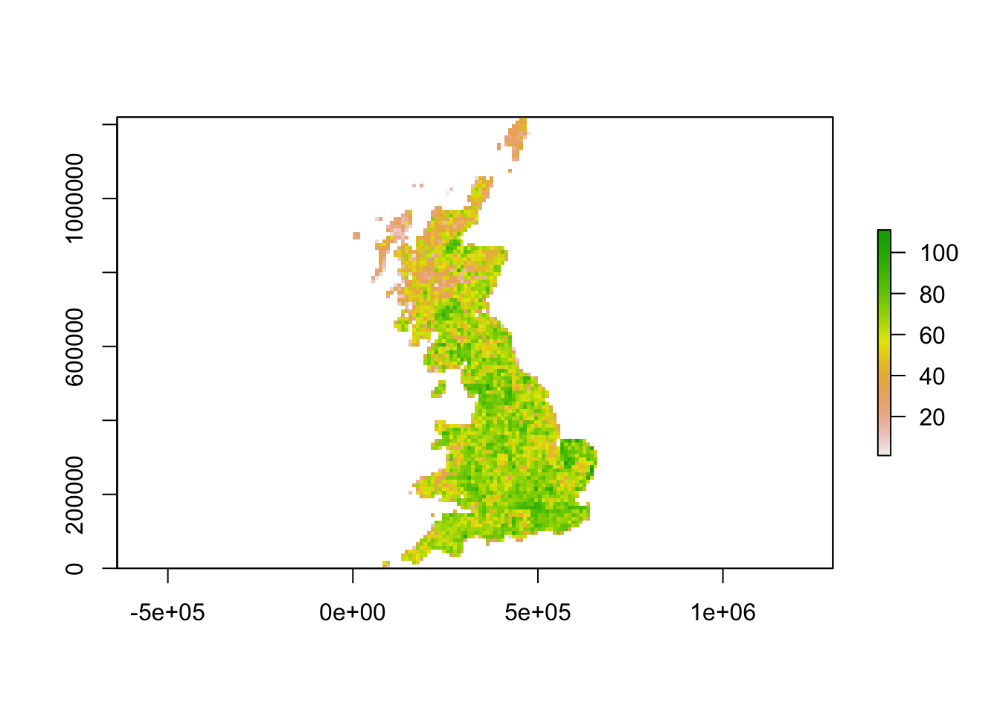
In order to compare species richness across time periods, you have to compute and map species richness for each sampling period. Then, you can calculate the differences in species richness between these periods.
I give you a few hints how I made the plots below. I mapped species richness by first making stacks of species richness for the different time periods (one species richness layer per time period) and then used the function spplot() to produce the three adjacent maps. Of course you can also produce three seperate maps and put them next to each other by using the function par(mfrow=c(1,3).
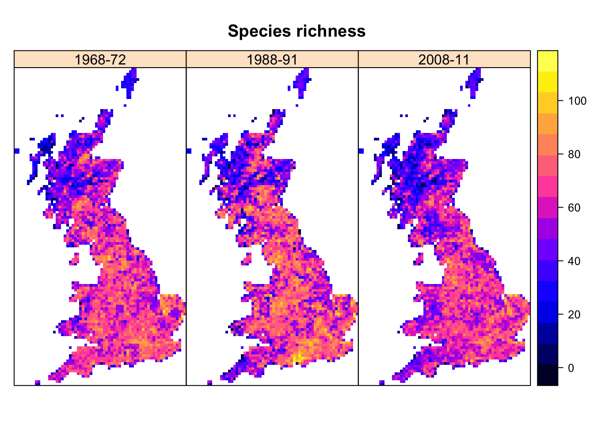
For the plot of species richness differences, I define my own colour palette. First, you have to produce a raster that shows the difference in species richness between two periods. Let us assume you call this raster change_richness. Then you can procude the plot using this code:
#------
# Map species richness differences
par(mfrow=c(1,3))
# Define axis for colour breaks
brks_diff <- seq(-50,50,by=5)
# Define colour palette
cols.diff = colorRampPalette(rev(c('#650A13','#b2182b','#d6604d','#f4a582','grey90','#92c5de','#4393c3','#2166ac','#0B2F52')))(21) # red-blue diverging
# Plot the species richness change between 1968 and 2011
plot(change_richness, axes=F, col=cols.diff, lab.breaks=brks.diff, zlim=c(-50,50), main='Species richness change \n1968 - 2011')
# plot the other two maps ...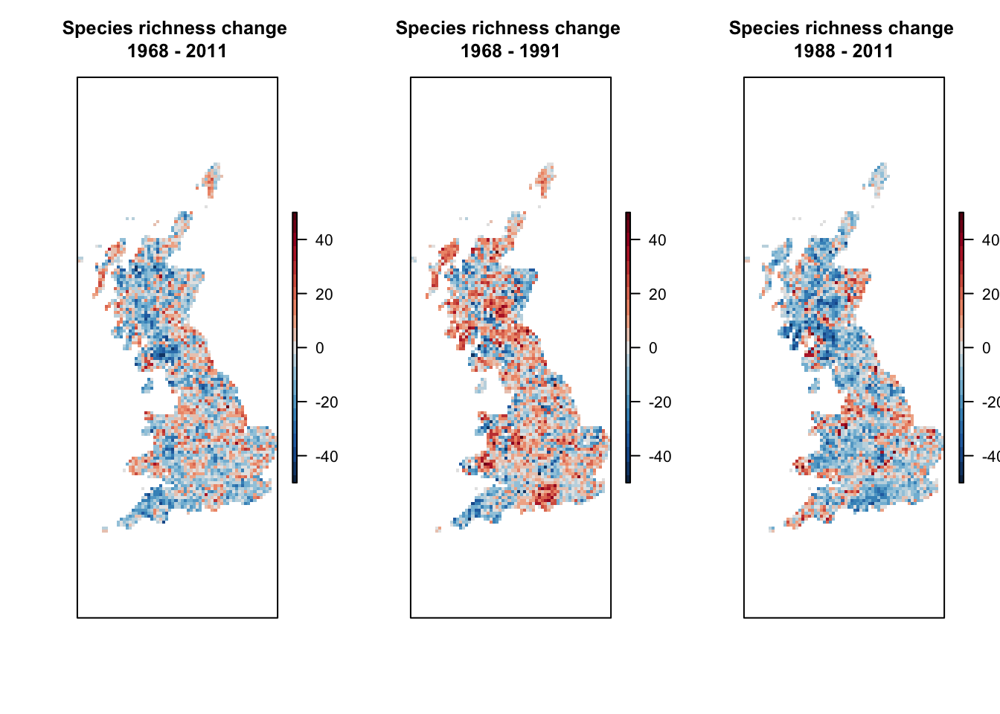
Summary Task 1: map species richness changes
Sometimes, we are interested how specific species groups, for example families or orders, are responding to global change. The classification into family and order was provided in the red list status table from the previous session:
redlist_status <- read.table('/Users/zurell/data/Lehre/UP_Lehre/EEC/Macroecology/Pracs_Macro/05_IUCN_data/UK_birds_redlist_status.csv', header=T, sep=',')redlist_status <- read.table('data/UK_birds_redlist_status.csv', header=T, sep=',')# Restrict red list table to those species that are found in UK:
redlist_status <- subset(redlist_status, scientific_name %in% spp_names)
# List number of bird species in different orders:
table(redlist_status$order)##
## ACCIPITRIFORMES ANSERIFORMES BUCEROTIFORMES CAPRIMULGIFORMES
## 9 36 1 2
## CHARADRIIFORMES COLUMBIFORMES CORACIIFORMES CUCULIFORMES
## 37 5 1 1
## FALCONIFORMES GALLIFORMES GAVIIFORMES GRUIFORMES
## 4 14 2 5
## PASSERIFORMES PELECANIFORMES PICIFORMES PODICIPEDIFORMES
## 91 6 4 3
## PROCELLARIIFORMES PSITTACIFORMES STRIGIFORMES SULIFORMES
## 3 4 7 2# List number of bird species in different orders:
subset(redlist_status,order=='ACCIPITRIFORMES')$scientific_name## [1] "Milvus milvus" "Circus aeruginosus" "Circus cyaneus"
## [4] "Accipiter gentilis" "Accipiter nisus" "Buteo buteo"
## [7] "Aquila chrysaetos" "Pandion haliaetus" "Parabuteo unicinctus"We can use the table to query the species belonging to a specific order or family, then extract these species from the distribution data, and compute and map species richness.
# Extract species belonging to the order ACCIPITRIFORMES:
accipiter_spp <- subset(redlist_status,order=='ACCIPITRIFORMES')$scientific_name
accipiter_spp <- sub(' ','_', accipiter_spp)
# Compute ACCIPITRIFORMES species richness
birds_68$sr_accipiter <- rowSums(birds_68[,accipiter_spp])
# Map ACCIPITRIFORMES species richness
plot(rasterFromXYZ(birds_68[,c('EASTING','NORTHING','sr_accipiter')]), main="Richness ACCIPITRIFORMES")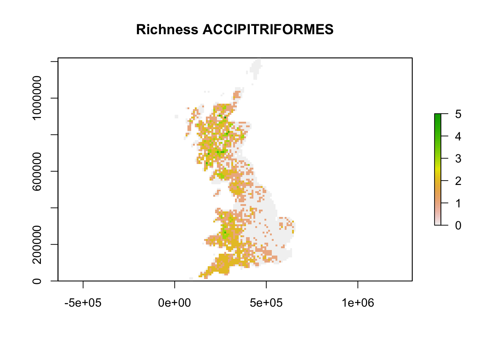
Similar to the first task, we can compute species richness for the different time periods and assess the changes in species richness.
# Map species richness
bird_dist$sr_accipiter <- rowSums(bird_dist[,accipiter_spp])
spplot(stack(
rasterFromXYZ(subset(bird_dist,period=='1968-72')[,c('EASTING','NORTHING','sr_accipiter')]),
rasterFromXYZ(subset(bird_dist,period=='1988-91')[,c('EASTING','NORTHING','sr_accipiter')]),
rasterFromXYZ(subset(bird_dist,period=='2008-11')[,c('EASTING','NORTHING','sr_accipiter')])),
names.attr = c('1968-72','1988-91','2008-11'), main='Richness ACCIPITRIFORMES'
)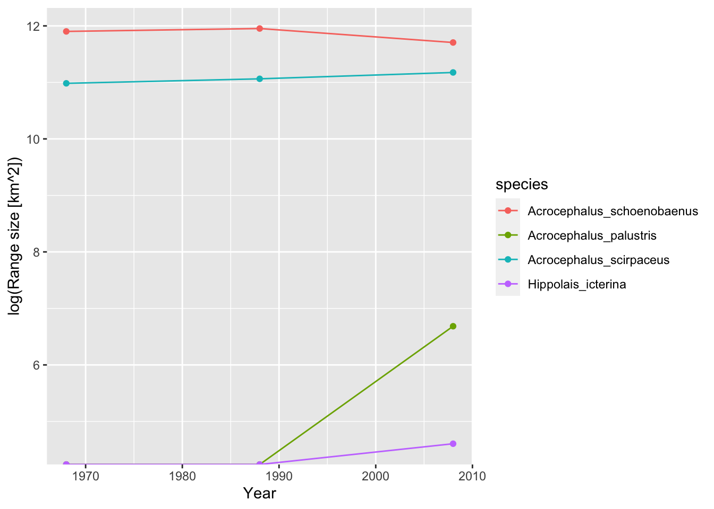
#------
# Map species richness differences
par(mfrow=c(1,3)) # make three panels
# we define our own colour palette
brks_diff <- seq(-5,5,by=5)
cols.diff = colorRampPalette(rev(c('#650A13','#b2182b','#d6604d','#f4a582','grey90','#92c5de','#4393c3','#2166ac','#0B2F52')))(21) # red-blue diverging
# map the differences in species richness between the different time periods
diff_1968_2011 <- rasterFromXYZ(subset(bird_dist,period=='2008-11')[,c('EASTING','NORTHING','sr_accipiter')]) - rasterFromXYZ(subset(bird_dist,period=='1968-72')[,c('EASTING','NORTHING','sr_accipiter')])
plot(diff_1968_2011, axes=F, col=cols.diff, lab.breaks=brks.diff, zlim=c(-5,5), main='ACCIPITRIFORMES \nSpecies richness change \n1968 - 2011')
diff_1968_1991 <- rasterFromXYZ(subset(bird_dist,period=='1988-91')[,c('EASTING','NORTHING','sr_accipiter')]) - rasterFromXYZ(subset(bird_dist,period=='1968-72')[,c('EASTING','NORTHING','sr_accipiter')])
plot(diff_1968_1991, axes=F, col=cols.diff, lab.breaks=brks.diff, zlim=c(-5,5), main='ACCIPITRIFORMES \nSpecies richness change \n1968 - 1991')
diff_1988_2011 <- rasterFromXYZ(subset(bird_dist,period=='2008-11')[,c('EASTING','NORTHING','sr_accipiter')]) - rasterFromXYZ(subset(bird_dist,period=='1988-91')[,c('EASTING','NORTHING','sr_accipiter')])
plot(diff_1988_2011, axes=F, col=cols.diff, lab.breaks=brks.diff, zlim=c(-5,5), main='ACCIPITRIFORMES \nSpecies richness change \n1988 - 2011')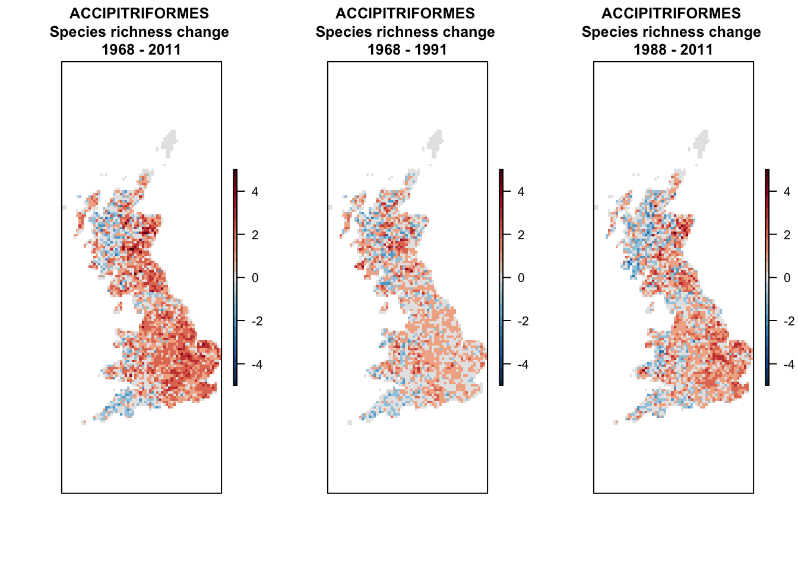
#----------------------
# Extract species belonging to the order PASSERIFORMES:
passerine_spp <- subset(redlist_status,order=='PASSERIFORMES')$scientific_name
passerine_spp <- sub(' ','_', passerine_spp)
# Map species richness
bird_dist$sr_passerine <- rowSums(bird_dist[,passerine_spp])
spplot(stack(
rasterFromXYZ(subset(bird_dist,period=='1968-72')[,c('EASTING','NORTHING','sr_passerine')]),
rasterFromXYZ(subset(bird_dist,period=='1988-91')[,c('EASTING','NORTHING','sr_passerine')]),
rasterFromXYZ(subset(bird_dist,period=='2008-11')[,c('EASTING','NORTHING','sr_passerine')])),
names.attr = c('1968-72','1988-91','2008-11'), main='Richness PASSERIFORMES'
)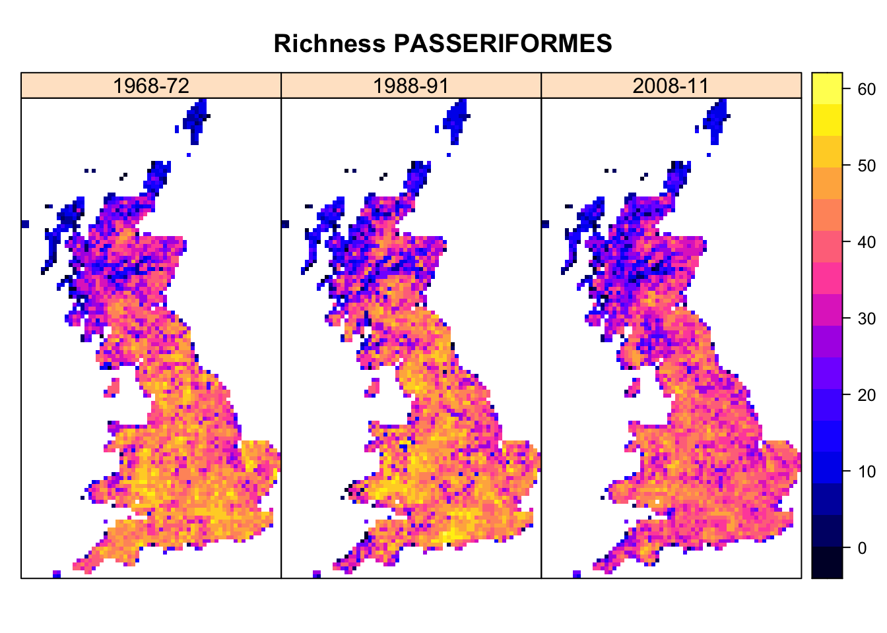
#------
# Map species richness differences
par(mfrow=c(1,3))
brks_diff <- seq(-35,35,by=5)
cols.diff = colorRampPalette(rev(c('#650A13','#b2182b','#d6604d','#f4a582','grey90','#92c5de','#4393c3','#2166ac','#0B2F52')))(21) # red-blue diverging
# different from above, we simultaneously produce and plot the rasters:
plot(rasterFromXYZ(subset(bird_dist,period=='2008-11')[,c('EASTING','NORTHING','sr_passerine')]) - rasterFromXYZ(subset(bird_dist,period=='1968-72')[,c('EASTING','NORTHING','sr_passerine')]), axes=F, col=cols.diff, lab.breaks=brks.diff, zlim=c(-35,35), main='PASSERIFORMES \nSpecies richness change \n1968 - 2011')
plot(rasterFromXYZ(subset(bird_dist,period=='1988-91')[,c('EASTING','NORTHING','sr_passerine')]) - rasterFromXYZ(subset(bird_dist,period=='1968-72')[,c('EASTING','NORTHING','sr_passerine')]), axes=F, col=cols.diff, lab.breaks=brks.diff, zlim=c(-35,35), main='PASSERIFORMES \nSpecies richness change \n1968 - 1991')
plot(rasterFromXYZ(subset(bird_dist,period=='2008-11')[,c('EASTING','NORTHING','sr_passerine')]) - rasterFromXYZ(subset(bird_dist,period=='1988-91')[,c('EASTING','NORTHING','sr_passerine')]), axes=F, col=cols.diff, lab.breaks=brks.diff, zlim=c(-35,35), main='PASSERIFORMES \nSpecies richness change \n1988 - 2011')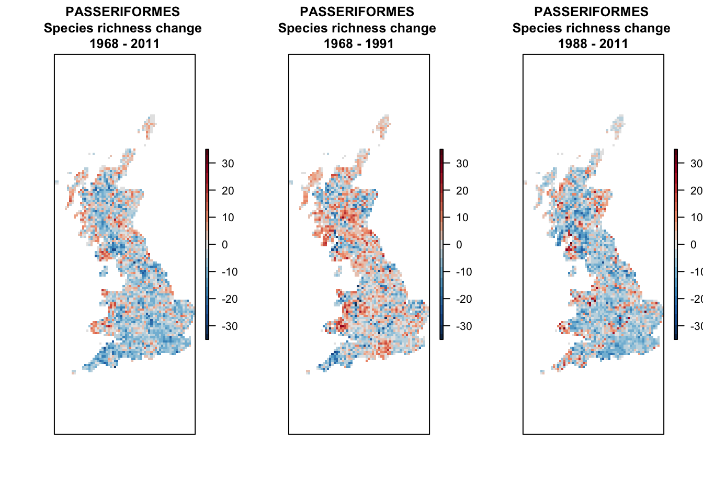
Summary Task 2: map taxon-specific species richness changes
For many questions, it is also interesting to analyse global change impacts at the species level, to answer for example how many species are shifting northwards, how many species have contracting or expanding ranges.
In the case of the gridded distribution data with equal-area grid cells, we can simply calculate range size difference by summing the number of cells. As example, we look at the sedge warbler (Acrocephalus schoenobaenus):
# range size in different time periods in km°2
(sedge_area68 <- sum(subset(bird_dist,period=='1968-72')[,'Acrocephalus_schoenobaenus'])*100) # each grid cell in 10*10 km of size## [1] 147600(sedge_area88 <- sum(subset(bird_dist,period=='1988-91')[,'Acrocephalus_schoenobaenus'])*100)## [1] 155400(sedge_area08 <- sum(subset(bird_dist,period=='2008-11')[,'Acrocephalus_schoenobaenus'])*100)## [1] 121300We can also compare the range size changes for all ACROCEPHALIDAE:
acrocepha_spp <- subset(redlist_status,family=='ACROCEPHALIDAE')$scientific_name
acrocepha_spp <- sub(' ','_', acrocepha_spp)
# Make data frame for storing the range sizes
acrocepha_rangesize <- data.frame(expand.grid(period=c('1968-72', '1988-91', '2008-11'), species=acrocepha_spp), rangesize=NA)
# Loop through all time periods and species to compute range size
for (t in c('1968-72', '1988-91', '2008-11')) {
for (sp in acrocepha_spp) {
rangesize <- sum(subset(bird_dist,period==t)[,sp])*100
acrocepha_rangesize[acrocepha_rangesize$period==t & acrocepha_rangesize$species==sp, 'rangesize'] <- rangesize
}
}
# plot changes in range size
library(ggplot2)
ggplot(data = acrocepha_rangesize, mapping = aes(x = rep(c(1968,1988,2008),4), y = log(rangesize), color=species)) + geom_line() + geom_point() + xlab('Year') + ylab('log(Range size [km^2])')We can also look at positions of range centres or boundaries. For simplicity, let’s analyses only the latitudinal (south-north) shifts.
# Make data frame for storing the range positions
acrocepha_rangelimits <- data.frame(expand.grid(period=c('1968-72', '1988-91', '2008-11'), species=acrocepha_spp), rangecentre=NA, leading_edge=NA)
# Loop through all time periods and species to compute range size
for (t in c('1968-72', '1988-91', '2008-11')) {
for (sp in acrocepha_spp) {
# range centre
rangecentre <- mean(subset(bird_dist[bird_dist[,sp]==1,], period==t)[,'NORTHING'], na.rm=T)
acrocepha_rangelimits[acrocepha_rangelimits$period==t & acrocepha_rangelimits$species==sp, 'rangecentre'] <- rangecentre
# leading edge
edge <- quantile(subset(bird_dist[bird_dist[,sp]==1,], period==t)[,'NORTHING'], 0.95)
acrocepha_rangelimits[acrocepha_rangelimits$period==t & acrocepha_rangelimits$species==sp, 'leading_edge'] <- edge
}
}
# plot changes in range positions
ggplot(data = acrocepha_rangelimits, mapping = aes(x = rep(c(1968,1988,2008),4), y = rangecentre, color=species)) + geom_line() + geom_point() + xlab('Year') + ylab('Range centre (Northing)') + ggtitle('Range centre')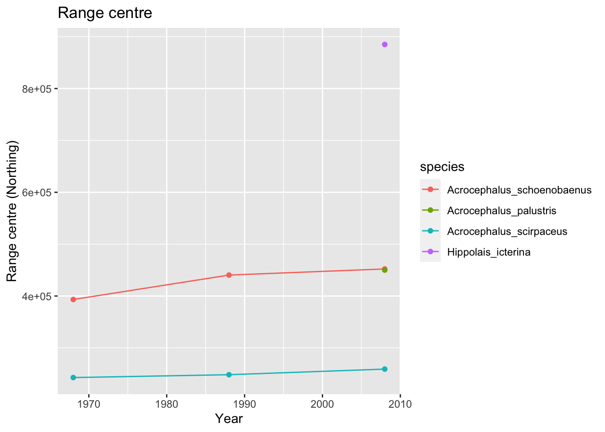
ggplot(data = acrocepha_rangelimits, mapping = aes(x = rep(c(1968,1988,2008),4), y = leading_edge, color=species)) + geom_line() + geom_point() + xlab('Year') + ylab('Range centre (Northing)') + ggtitle('Leading range edge')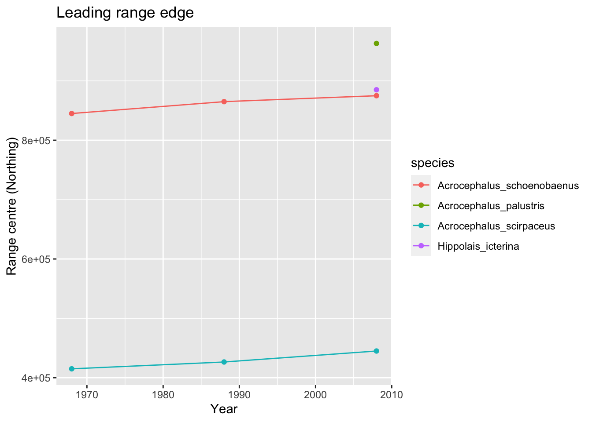
Summary Task 3: quantify species range changes
At the species level, we can analyse how species ranges shift over time and whether ranges are contracting or expanding. As an example, let’s continue analysing range changes in the sedge warbler (Acrocephalus schoenobaenus):
# ranges sedge warbler
sedge_68 <- rasterFromXYZ(subset(bird_dist,period=='1968-72')[,c('EASTING','NORTHING','Acrocephalus_schoenobaenus')])
sedge_88 <- rasterFromXYZ(subset(bird_dist,period=='1988-91')[,c('EASTING','NORTHING','Acrocephalus_schoenobaenus')])
sedge_08 <- rasterFromXYZ(subset(bird_dist,period=='2008-11')[,c('EASTING','NORTHING','Acrocephalus_schoenobaenus')])
spplot(stack(sedge_68, sedge_88, sedge_08))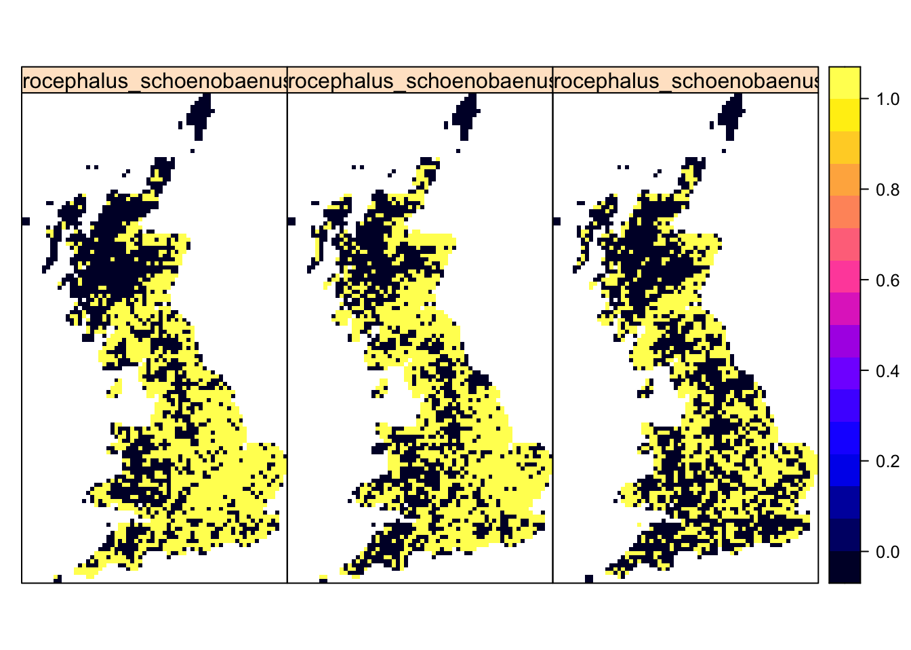
# Compute differences. To distinguish clearly where cells are colonised or decolonised, we assign occurrences in 1968 a value=1 and occurrence in 2008 a value=2:
temp <- sedge_08
values(temp)[values(temp)>0 & !is.na(values(temp))] <- 2
# Sum up the layers. Values=1 indicate presence in 1968, values=2 presence in 2008, values=3 presence in both periods
temp_diff <- sedge_68+temp
temp_diff_f <- as.factor(temp_diff)
rat <- levels(temp_diff_f)[[1]]
rat[["diff"]] <- c("Absent", "Extinction", "Colonisation", "Stable")
levels(temp_diff_f) <- rat
library(rasterVis)
custom.pal <- c("grey75", "coral", "cyan3","grey25")
levelplot(temp_diff_f, margin=F, scales=list(draw=FALSE),col.regions=custom.pal,main='Sedge warbler range change (1968-2011)')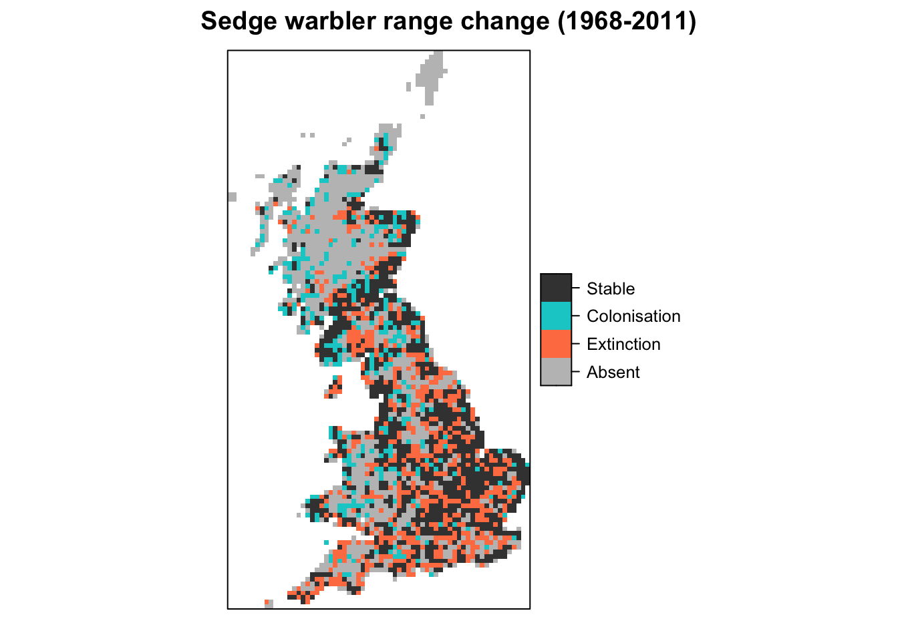
Even more insights can be gained by mapping the differences over all time periods.
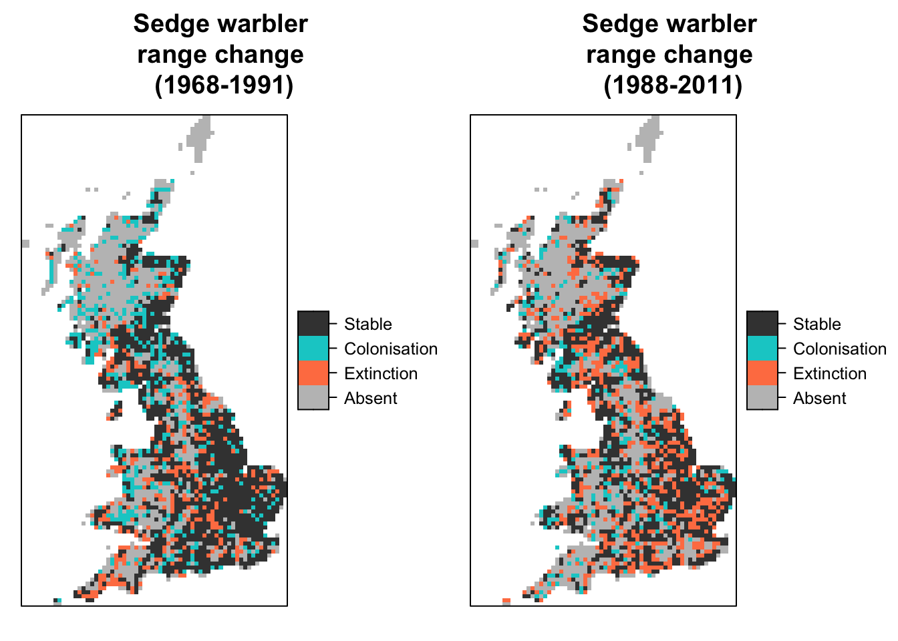
Summary Task 4: map species range changes
Gillings, Simon, Dawn E. Balmer, Brian J. Caffrey, Iain S. Downie, David W. Gibbons, Peter C. Lack, James B. Reid, J. Tim R. Sharrock, Robert L. Swann, and Robert J. Fuller. 2019. “Breeding and Wintering Bird Distributions in Britain and Ireland from Citizen Science Bird Atlases.” Global Ecology and Biogeography 28 (7): 866–74. https://doi.org/10.1111/geb.12906.